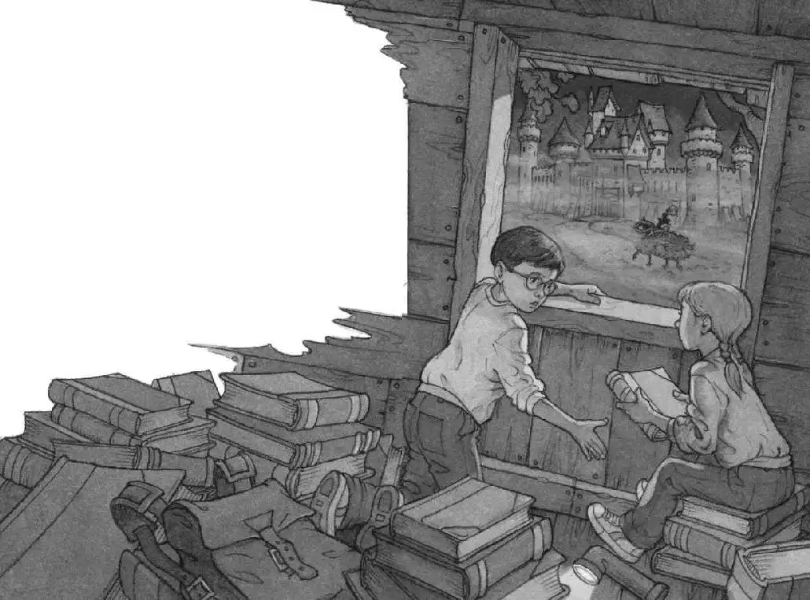

“Annie!” Jack shouted.
“No one’s here!” she shouted back.
Jack thought about going home. Then he thought about all the books in the tree house.
He started up the ladder. When he was almost at the top, he saw light in the distant sky. Dawn was starting to break.
Jack crawled through a hole in the tree house floor and took off his backpack.
Annie shined her flashlight on the books scattered about the floor.
“They’re still here,” she said.
Annie shined the light on a dinosaur book. It was the book that had taken them to the time of dinosaurs.
“Remember the Tyrannosaurus rex?” asked Annie.
Jack shuddered. Of course he remembered! How could anyone forget seeing a real live Tyrannosaurus rex?
The light fell on a book about Pennsylvania. A red silk bookmark stuck out of it.
“Remember the picture of Frog Creek?” said Annie.
“Of course,” said Jack. That was the picture that had brought them home.
“There’s my favorite,” said Annie.
The light was shining on a book about knights and castles. There was a blue leather bookmark in it.
Annie turned to the page with the bookmark. There was a picture of a knight on a black horse. He was riding toward a castle.
“Annie, close that book,” said Jack. “I know what you’re thinking.”
Annie pointed at the cover.
“Don’t, Annie!” said Jack.
“We wish we could go there,” Annie said.
“No, we don’t!” shouted Jack.
The wind began to moan. The leaves began to tremble.
It was happening again.
“We’re leaving!” cried Annie. “Get down!”
The wind moaned louder. The leaves shook harder.
Jack squeezed his eyes shut.
The tree house started to spin.
It spun faster and faster!
Then everything was still.
Absolutely still.
Jack opened his eyes. He shivered. The air was damp and cool.
The sound of a horse’s whinny came from below.
Neeee-hhhh!
“I think we’re here,” whispered Annie. She was still holding the castle book.
Jack peeked out the window.
A huge castle loomed out of the fog.
Jack looked around. The tree house was in a different oak tree.
“Look!” said Annie.
Down below, a knight on a black horse was riding by.
“Oh, man,” said Jack, “that’s incredible. But—we can’t stay here. We have to go home and make a plan first.” He picked up the book about Pennsylvania. He opened it to the page with the red silk bookmark. He pointed to the photograph of the Frog Creek woods. “I wish—”
“No!” said Annie. She yanked the book away from him. “Let’s stay! I want to visit the castle!”
“You’re nuts. We need to examine the situation,” said Jack. “From home.”
“Let’s examine it here!” said Annie.

“Come on, Annie.” Jack held out his hand. “Give it.”
Annie gave Jack the book. “Okay. You can go home. I’m staying,” she said. She clipped the flashlight to her belt.
“Wait!” said Jack.
“I’m going to take a peek. A teeny peek,” she said. And she scooted down the ladder.
Jack groaned. Okay, Annie won. He couldn’t leave without her. Besides, he sort of wanted to take a peek himself.
Jack put down the book about Pennsylvania. He dropped the castle book into his pack. He stepped onto the ladder and headed into the cool, misty air.